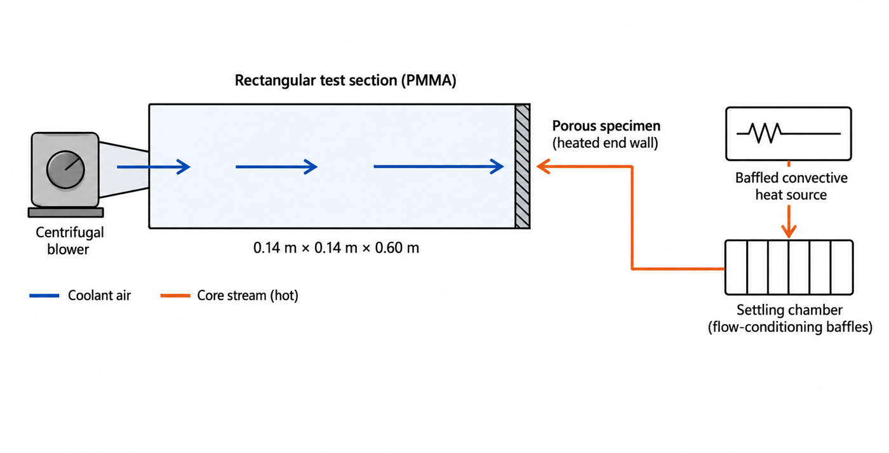
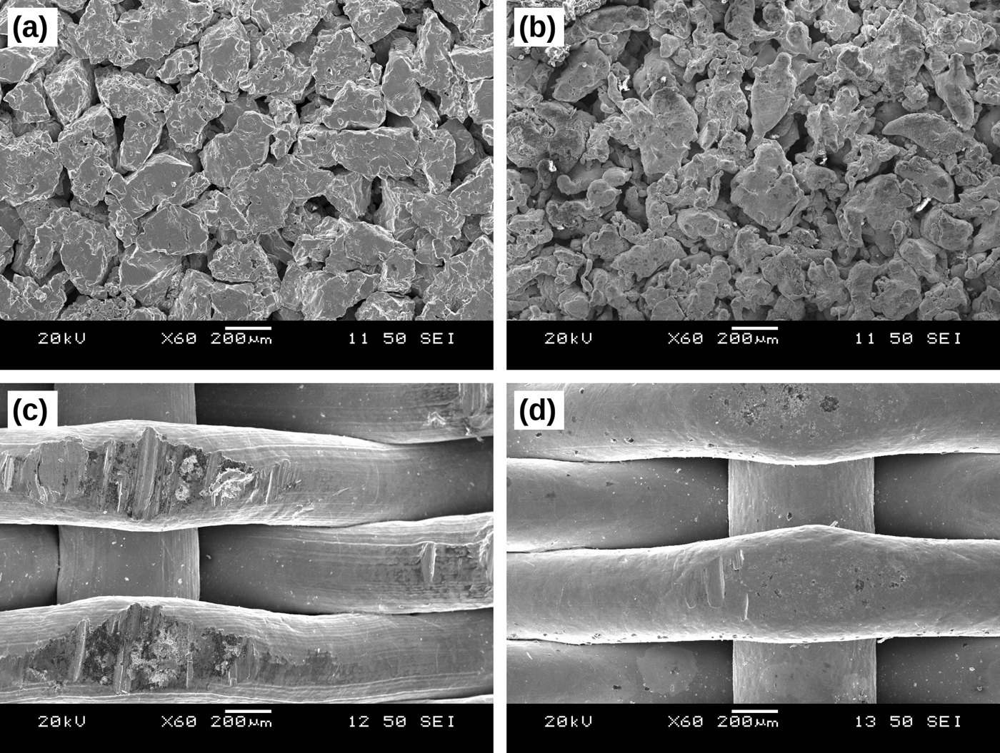
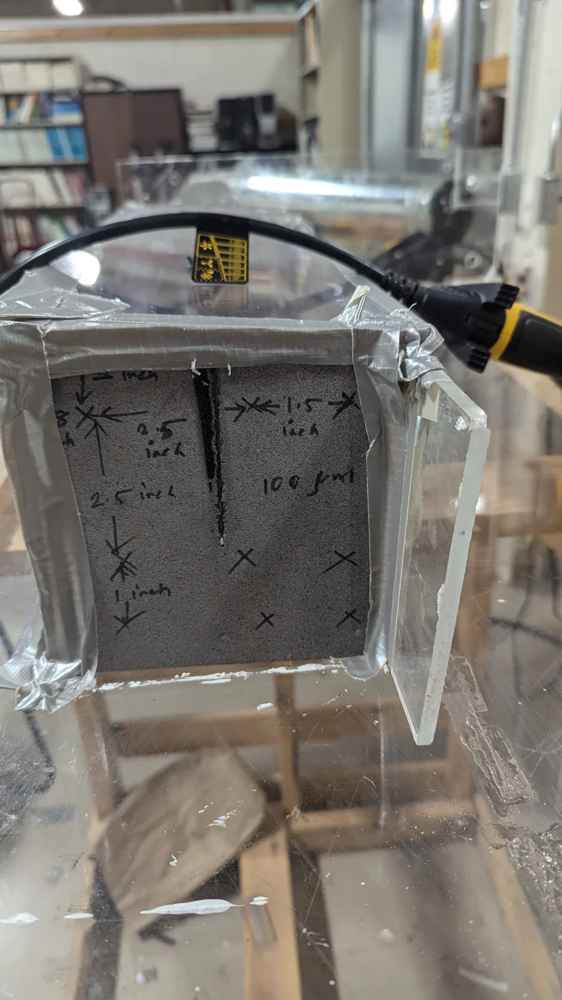
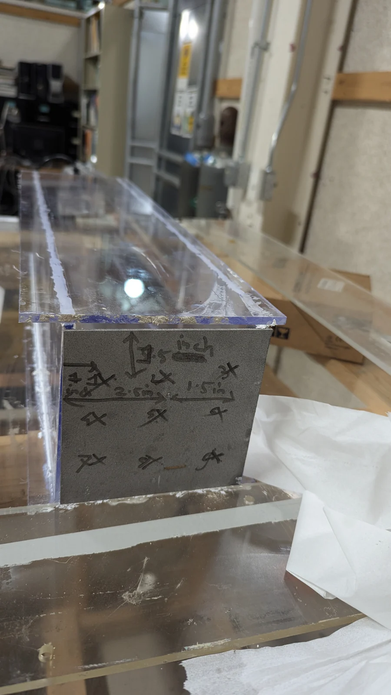
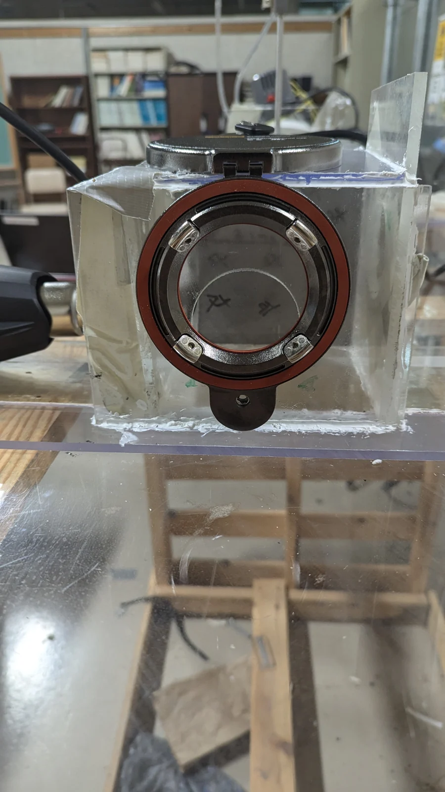
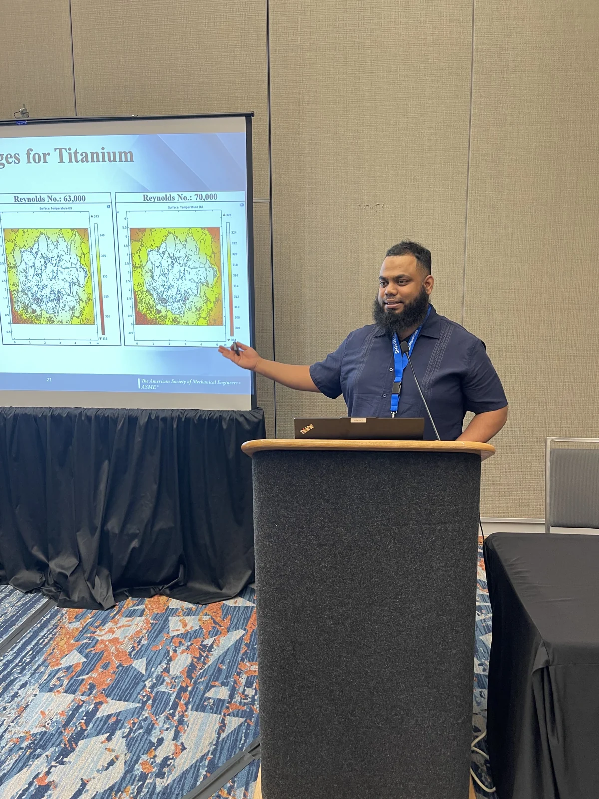
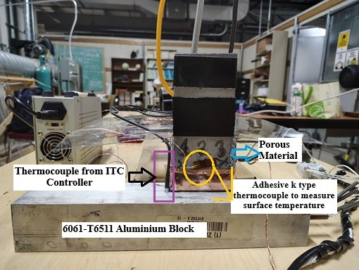
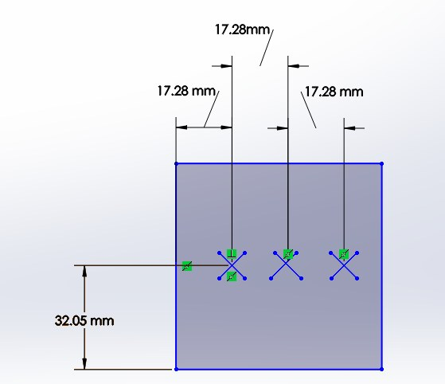
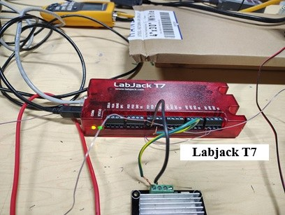
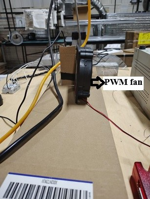

Experiments
Four test rigs, from steady cooling to closed-loop control
I design, instrument and run my own experiments. Each rig answered a question the previous one raised: what changes with material and pore structure, how fast the wall responds, and whether a model can act before the temperature rises.
Rig A · ASME Turbo Expo 2025 · ASME Heat Transfer Summer Conference 2025 · IMECE 2025
Stationary transpiration channel
A two-pass channel with a porous end wall that stands in for a transpiration-cooled turbine trailing edge. Three specimen studies ran on this rig:
- SS316L vs. titanium (GT2025-151170): titanium performed better at every Reynolds number tested; at Re 70,000 its η was 37.5% higher than SS316L (0.88 vs. 0.64).
- Sintered wire mesh vs. sintered powder (SHTC 2025, HT2025-156087): the powder’s uniform pore structure cooled better than the direction-dependent wire mesh.
- 80 µm vs. 100 µm wire-mesh pores (IMECE2025-164512).


- Infrared surface mapping. One camera frame through a CaF₂ window captures all nine measurement points at once. The camera was calibrated against a blackbody, with emissivity set for each material.
- Steady-state discipline. A point was accepted only when local temperatures stayed within ±0.3 °C for 25 s. Every condition was repeated three times.
- Uncertainty. Expanded uncertainty in η of ±5% at the lowest and ±7% at the highest Reynolds number (95% confidence).




Measured performance, SS316L vs. titanium
Mean over marked plate points · from GT2025-151170
The paper reports η = (Nu/Nu₀) / (f/f₀)1/3, a thermal performance factor that weighs heat-transfer gain against friction penalty, referenced to the Dittus–Boelter and Blasius smooth-channel correlations. Both plates: 60 µm pore diameter, 30% porosity, same geometry.
Rig and specimen
As reported in GT2025-151170
| Channel | Two-pass square Plexiglas channel, aspect ratio 1:1 |
|---|---|
| Hydraulic diameter, length | 139.7 mm, 609.6 mm |
| Porous plate | 139.7 × 139.7 mm, sintered SS316L or titanium |
| Pore diameter, porosity | 60 µm, 30% |
| Reynolds numbers | 39,000 · 63,000 · 70,000 |
| Heating | Hot-air blower directed at the outer plate face |
| Plate temperature | Fluke infrared measurement through a CaF₂ window at nine marked points |
| Flow | In-line velocity and pressure sensors at channel inlet and outlet |
| Interpretation | Numerical model of the porous plate alongside the measurements |
15-second rig walkthrough
No narration. The camera follows the clear test channel along the bench to the porous end wall and the connected flow and measurement equipment.
Rig B · presented at ASME Turbo Expo 2026 (GT2026-176271) · ASME Heat Transfer Summer Conference 2026 · extended for AIAA SciTech
Closed-loop aerothermal platform: LabJack control and transient response
Rig A measured steady cooling. Rig B asks how fast a porous wall responds when the heat load or coolant flow changes, and whether a learned model can adjust the flow before the wall overheats. I presented it at Turbo Expo 2026 and am refining the measurements for an AIAA SciTech paper.
Schematic, not to scale. Photos of the actual rig are below.
- Test section. Porous SS316L and titanium plates mounted on a 6061-T6511 aluminum block with two 250 W cartridge heaters (500 W total). An Inkbird ITC-308 controller and an OMEGA solid-state relay hold the block at 345 K, so the hot-side boundary condition is repeatable.
- Instrumentation. Adhesive K-type thermocouples at fixed positions on the plate surface (17.28 mm spacing), wired differentially for low noise, plus coolant-temperature and pressure-drop measurement.
- LabJack control programming. A LabJack T7 Pro (24-bit) on a static-IP Ethernet link logs the sensors at 10–50 Hz and outputs the PWM signal that drives a 12 V blower through an MKS MOSFET module. I wrote the Python (LJM) control code: it maps the surface-temperature error to PWM duty cycle and logs every channel, closing the loop in one script.
- Transient response. Step tests gave a thermal time constant of 48 ± 2.3 s for the titanium plates, with 5% and 2% settling times of 201 ± 10 s and 267 ± 13 s. This sets how fast a controller must act.
- Toward predictive control. A model trained on the measured data predicts the surface-temperature rise so the blower can act before overshoot (GT2026-176271). For AIAA SciTech I am extending it to a physics-informed neural network constrained by the Darcy–Forchheimer and LTNE equations.
GT2026-176271 paper ↗ · Where this led: the data-center test vehicle →



